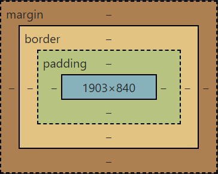

Box-model в CSS
Box-model в CSS - это модель, которая определяет, как браузеры рассчитывают размеры и отступы элементов HTML.
Каждый HTML элемент имеет четыре составляющие:
- Содержимое (content): это собственно содержимое элемента, например, текст внутри тега <p>.
- Паддинг (padding): это пространство внутри содержимого и границы элемента.
- Граница (border): это линия вокруг паддинга элемента.
- Отступ (margin): это пространство вокруг границы элемента, и оно отделяет его от других элементов. 
Content
Внутренняя область элемента (content area) содержит текст и другие элементы, расположенные внутри (контент или содержимое). У неё часто бывает фон, цвет или изображение (в таком порядке: фоновый цвет скрывается под непрозрачным изображением), и она находится внутри content edge; её размеры называются ширина контента (content width или content-box width), и высота контента (content height или content-box height). Иногда ещё говорят «внутренняя ширина/высота элемента»
По умолчанию размер внутренней области с содержимым задаётся свойствами width, min-width, max-width, height, min-height и max-height.
Padding
Поля элемента (padding area) — это пустая область, окружающая контент. Она может быть залита каким-то цветом, покрыта фоновый картинкой, а её границы называются края полей (padding edge).
Размеры полей задаются по отдельности с разных сторон свойствами padding-top, padding-right, padding-bottom, padding-left или общим свойством padding.
Border
Область рамки (border area) окружает поля элемента, а её граница называется края рамки (border edge). Ширина рамки задаётся отдельным свойством border-width или в составе свойства border. Размеры элемента с учётом полей и рамки иногда называют внешней шириной/высотой элемента.
Margin
Отступы (margin area) добавляют пустое пространство вокруг элемента и определяют расстояние до соседних элементов.
Величина отступов задаётся по отдельности в разных направлениях свойствами margin-top, margin-right, margin-bottom, margin-left или общим свойством margin.
Отступы двух соседних элементов, расположенных друг над другом или вложенных друг в друга, могут накладываться. Это называется схлопывание границ (margin collapsing). Схлопываются только вертикальные отступы.
Когда вы задаете размеры для элемента, например ширину и высоту, вы задаете размер только для содержимого. Отступы, границы и паддинг добавляются к этому размеру, чтобы определить окончательный размер элемента.
Это важно учитывать при назначении стилей, потому что если вы не учитываете размер паддинга и границы, элемент может оказаться больше или меньше, чем ожидалось. В CSS существует свойство box-sizing, которое позволяет изменить способ расчета размеров элемента, и включает в себя возможность включения или исключения паддинга и границы из расчета размеров элемента.
В общем, box-model в CSS определяет способ расчета размеров элементов и отступов, позволяя разработчикам лучше контролировать внешний вид и поведение элементов на веб-странице.